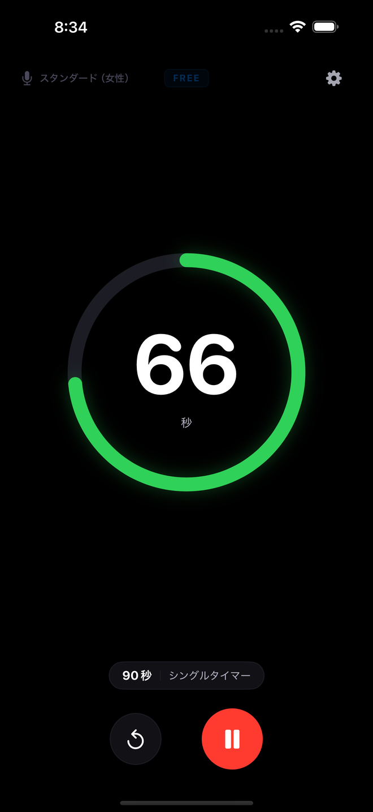
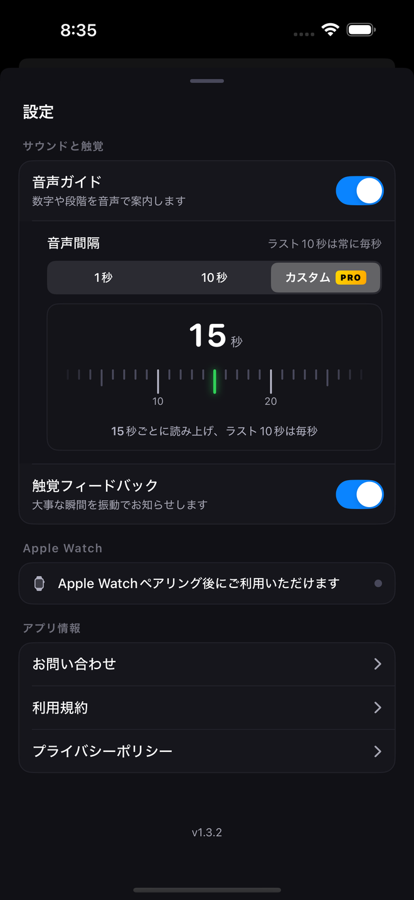
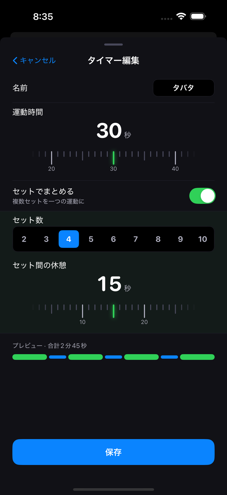
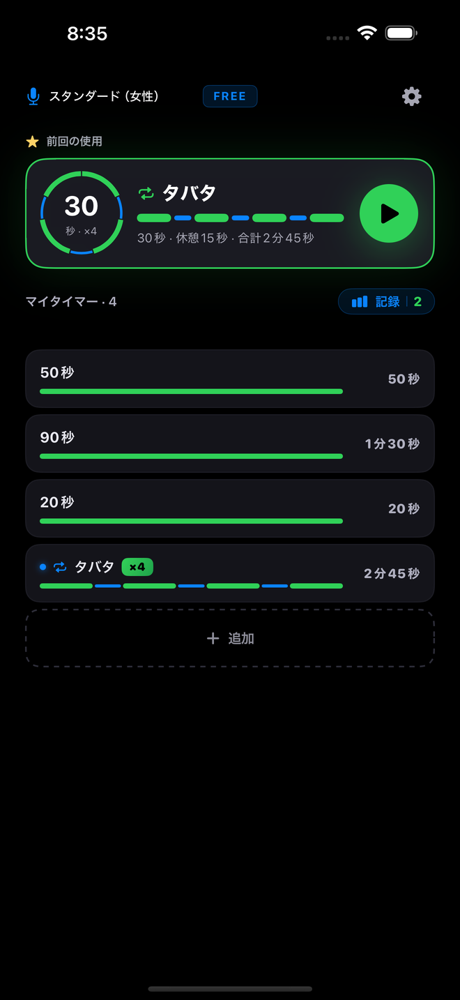
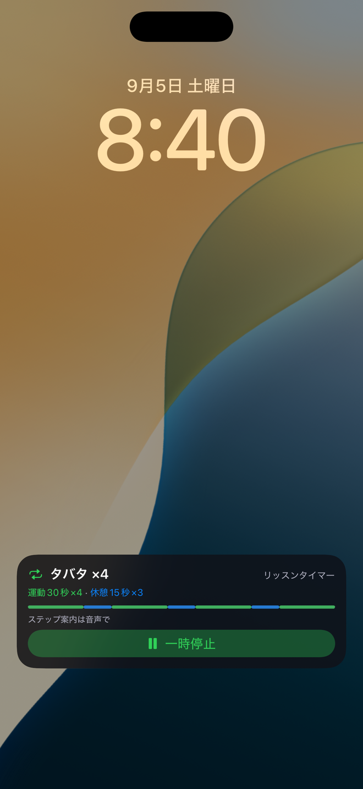
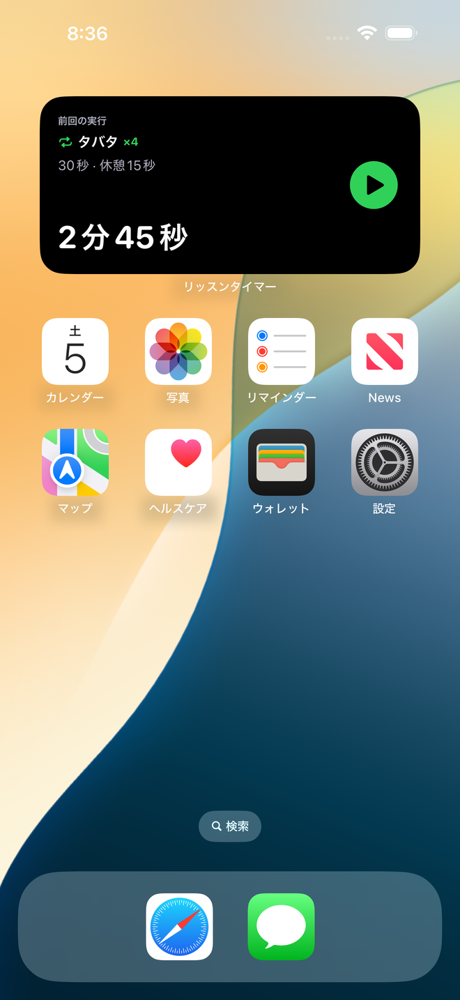
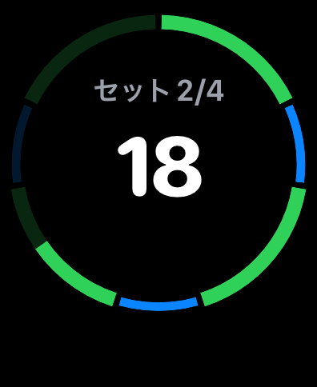
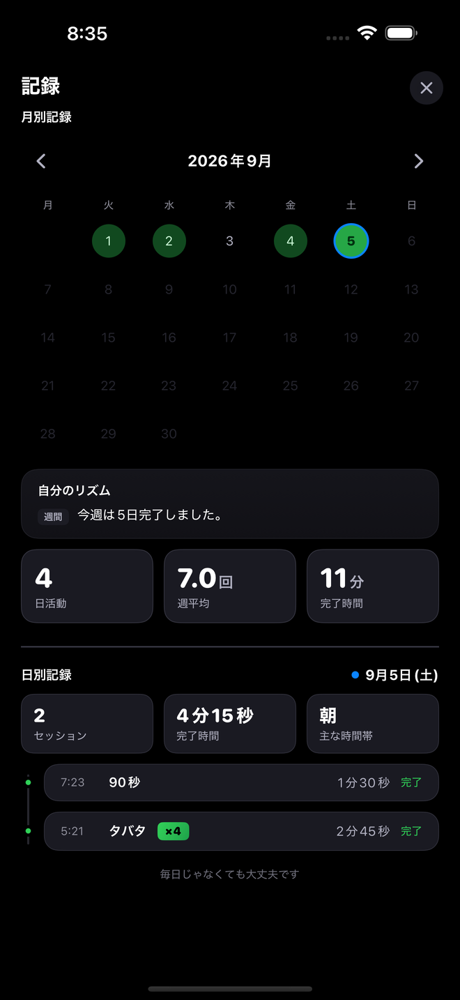
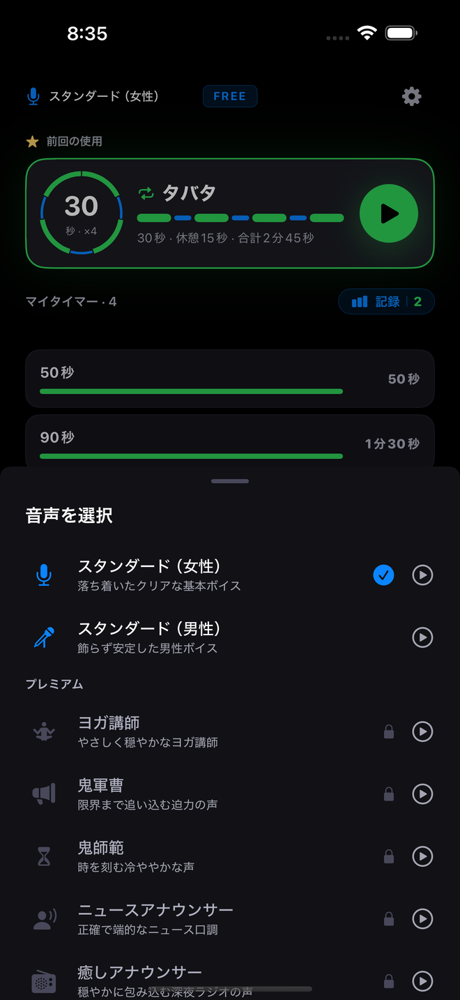

F1
1秒ごとの音声カウントダウン
音声がカウントダウンの1秒ごとを、最初の1秒から最後の1秒まで読み上げます — インターバルあたり1〜300秒。
こんな時に プランク、デッドハング、ストレッチ、呼吸法 — 見下ろせないあらゆる場面。

運動して、休んで、また繰り返す — その一秒一秒を、耳で聴いてみませんか。
インターバルを設定したら、あとはフォームに集中するだけ。リッスンタイマーがラウンドの間ずっと毎秒を読み上げてくれるので、画面を見なくても今何秒かがわかります。プランク、デッドハング、ストレッチ、呼吸瞑想も同じようにお使いいただけます。
広告付きで無料 · プレミアムはサブスクリプションではなく買い切り · iPhone（iOS 17 以降） · Apple Watch はプレミアムで
違い
ほとんどのインターバルタイマーは境目でしか合図しません — ラウンド終了のビープ、せいぜい最後の数秒。リッスンタイマーは話すタイマーです。最初の1秒から最後の1秒まで声で数えるので、プランク・ストレッチ・デッドハング・タバタのラウンド・HIITサーキットの間も、視線はフォームに残ります。
画面をロックしてポケットに入れてもカウントは続きます。音楽やポッドキャストはそのまま — カウントの間だけ音量を下げ、すぐに元に戻します。
そしてフェーズが変わるたびに聞こえます：休憩、次のセット、完了。見下ろす必要はありません。推測する必要もありません。


機能12個。それぞれ何で、いつ使うのか。
音声がカウントダウンの1秒ごとを、最初の1秒から最後の1秒まで読み上げます — インターバルあたり1〜300秒。
こんな時に プランク、デッドハング、ストレッチ、呼吸法 — 見下ろせないあらゆる場面。

1秒ごと（デフォルト）、10秒ごと＋ラスト10秒は1つずつ、またはプレミアムで自分の間隔（N秒ごと、1〜60）を選べます。
こんな時に どれを選んでもラスト10秒は必ず1つずつ数え、すべてのフェーズの開始と終了を知らせます。

運動（1〜300秒）、休憩（1〜300秒）、2〜10セットを設定すれば、リッスンタイマーがサーキット全体を進めてすべての変化を知らせます。
こんな時に タバタ、HIITサーキット、ボクシングのラウンド、インターバル走。

タイマーを最大12個まで保存。最後に使ったものが大きなカードで一番上に並び、1タップで開始できます。追加・削除・並べ替えは自由です。
こんな時に 「昨日と同じ」を1タップで。

端末をロックしてポケットに入れても、床に置いても、音声は続きます。
こんな時に デスクの前ではないすべての運動。
自分の音楽はそのまま流れ、カウントがその上に重なります。
こんな時に ヘッドホンやスピーカーでのトレーニング。
ロックを解除せずに、ロック画面とダイナミックアイランドでタイマーを確認 — カウント、現在のフェーズ、セットまで。プレミアムならロック画面から一時停止・再開・停止ができます。
こんな時に セットの合間にロック画面をちらっと見る時。

ウィジェットが最後に使ったプリセットまたはピン留めしたプリセットを表示し、タップするとアプリが開きます。プレミアムなら ▶ でウィジェットから直接タイマーを開始でき — アプリを開く必要はありません — 実行中はウィジェットに一時停止と停止が表示されます。
こんな時に 端末をアームバンドに入れる前に、ホーム画面から始める時。

話しかけるかショートカットをタップすれば、アプリを開かずに最後のプリセットを開始します（プレミアムがない場合はアプリが開きます）。
こんな時に 手がふさがっていて、端末は部屋の向こう。
手首から直接タイマーを開始・操作できます。Apple Watch のコンプリケーションから1タップで即スタート。すべてのプリセットが Apple Watch に自動で同期します。10秒前の警告とフィニッシュで手首が一緒にタップします。Watch は音声を再生する iPhone のタイマーのリモコンとして動作します。
こんな時に 端末を取り出しもしない時。

耳がふさがっていても手首が一緒にタップします（Apple Watch）。iPhone は10秒前の警告とフィニッシュで振動し、iPhone の触覚フィードバックは設定でオフにできます。
こんな時に うるさいジム、ヘッドホンなし。
月間カレンダーの統計 — どの日にトレーニングしたかを一目で確認でき、その日に完了した内容の一覧もつきます。プレミアムでは「自分のリズム」が週間・月間・全体のパターン分析を加えます。
こんな時に ひと月が埋まっていくのを見る時。

キャラクターごとに異なるトーンで、トレーニングのリズムを作ります。
選ぶ前にアプリですべてのボイスを試聴できます。ボイスは高品質なニューラルTTSで生成しアプリに内蔵しているため、ワークアウト中にインターネットは必要ありません。
英語・日本語・韓国語に対応し、アプリは iPhone の言語設定に従います。

リッスンタイマーはバナー広告付きで無料です。プレミアムはサブスクリプションではなく買い切りで、この iPhone と Apple Watch で以下のすべてを解放します。Apple アカウントごとに1回、プレミアム全機能を3日間無料で試せます：メイン画面のゴールドの「3日体験」ボタンをタップして、短い広告を1本見るだけです。
価格は国ごとに App Store に表示されます。
はい。カウントダウンの1秒ごとを、最初の1秒から最後の1秒まで読み上げます — インターバルあたり最大300秒。10秒間隔モードでも、ラスト10秒は1つずつ数えます。
はい。カウントはバックグラウンドで続き、ライブアクティビティがロック画面に表示します。
いいえ。オーディオダッキングがカウントの間だけ音楽を下げ、すぐに元に戻します。
はい。運動と休憩のフェーズ、最大10セットでルーティンを組めます。フェーズの変化はすべて音声で知らせます。
ほとんどのインターバルタイマーは境目でしか合図しません — ラウンドの終わり、または最後の数秒。リッスンタイマーは1秒ごとを声で数えるので、画面を見なくても今どこにいるかが常にわかります。
いいえ。買い切りです。価格は国ごとに App Store に表示されます。
はい。プレミアムの全機能を Apple アカウントごとに1回、3日間無料で試せます。メイン画面のゴールドの「3日体験」ボタンをタップして、短い広告を1本見てください。
はい、プレミアムで。手首からタイマーを開始・操作でき、コンプリケーションから1タップで開始、プリセットは自動で同期します。Watch は iPhone のタイマーのリモコンとして動作し、音声は iPhone が再生します。
はい、プレミアムで：ホーム画面やロック画面のウィジェット、Siri やショートカット、または Apple Watch から。プレミアムがない場合はタップでアプリが開き、そこから開始します。
7つのボイスキャラクター — スタンダード（女性）とスタンダード（男性）は無料、ヨガ講師・鬼軍曹・鬼師範・ニュースアナウンサー・癒しアナウンサーはプレミアムに含まれます。ボイスとアプリは英語・日本語・韓国語に対応し、iPhone の言語設定に従います。
いいえ。アカウントはなく、すべてのボイスがアプリに内蔵されているため、タイマーはオフラインで動作します。App Store での購入と任意の広告にのみ接続が必要です。